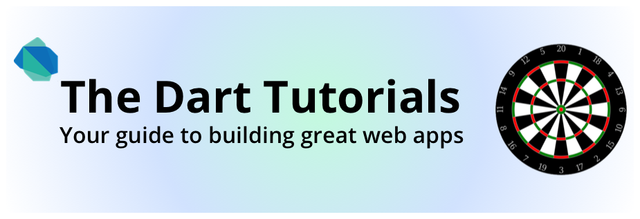
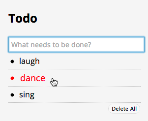
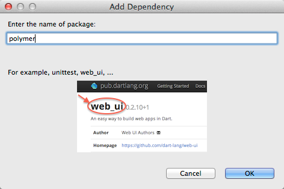

Dart 教程告诉你如何用 Dart 语言、工具和 API 创建 web 应用。
前提条件
- 你已经知道如何编写结构化程序语言，例如 C 或者 Java。
- 你熟悉面向对象编程概念。
- 你可以不了解如何通过 DOM (Document Object Model)来实现浏览器编程。
出发吧！ 你可以按照从左到右的顺序 逐步学习本教程，也可以直接选择你需要的部分。
下载软件并且看看里面包含那些工具
和类库。
并运行如下两个示例程序。

开始
下载 Dart。运行两个示例应用。
下载示例代码
在继续下一步之前， 先下载该教程中的所有示例代码。- 下载示例代码 ZIP 压缩包。
- 解压。
- 在 Dart 编辑器中打开 dart-tutorials-samples 目录。
- 找到下一个教程 连接 Dart 和 HTML。 .
网页用 HTML 编程并且在浏览器中显示为一个
被称为 DOM(Document Object Model)
的树形结构。
Dart 应用可以通过代码修改 DOM，
这样可以动态的修改网页内容。
首先，学习如何把 Dart 和 HTML 串联起来。
然后再学习如何 添加、移动和删除 DOM 元素。

连接 Dart 和 HTML
在 HTML 页面中添加一个 Dart 脚本标签。
在 DOM 中添加元素
在网页中添加和移动元素。
删除 DOM 元素
从网页中删除元素。

Dart 开发者一直忙于创建代码库来帮助你提高生产率。
利用这些代码库或者把你的代码共享给其他人使用。
安装共享代码
在 pub.dartlang.org分享和组织代码。
Define a Custom Element
使用 Polymer 创建自定义的 HTML 元素。

Use Future-Based APIs
了解下 Future。

在 Dart 库中有很多类可以帮助你 获取、发送、接
收和保存用户数据。
你可以在 form 中用 input 元素来收集用户数据。
你可以用 JSON 来格式化数据，并用 HttpRequest来发送和接收数据。
最后，你可以用 IndexedDB 在客户端保存数据。


使用 IndexedDB
用 IndexedDB 在客户端保存数据。